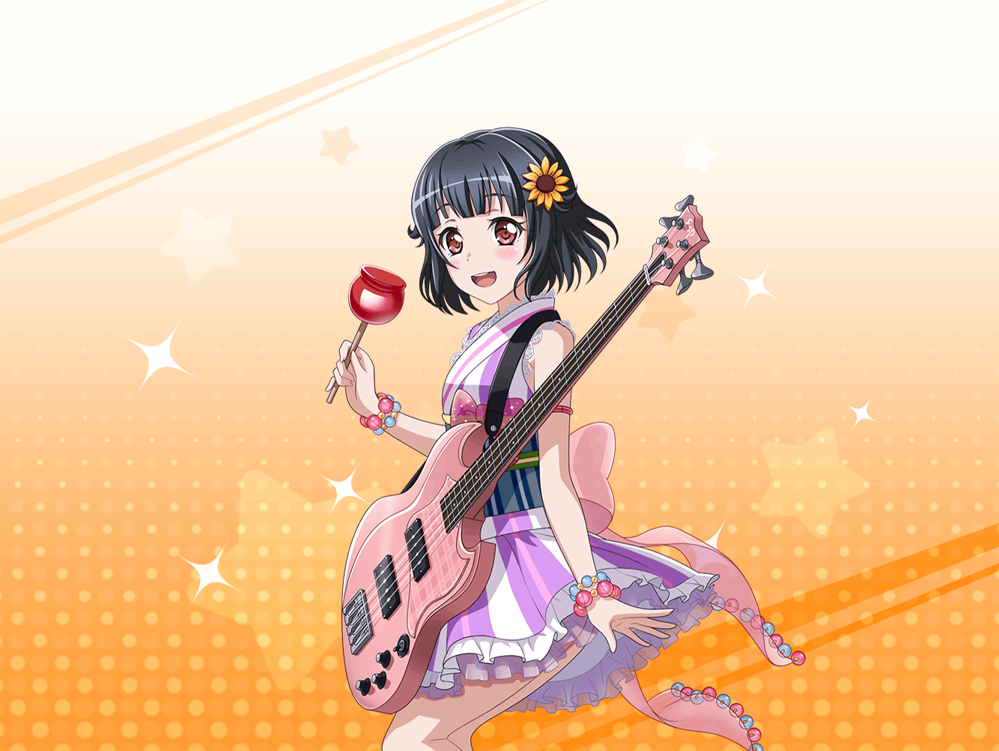

花火大会前
縁日の通り
りみ
香澄ちゃん、どこに行っちゃったんだろ……？
りみ
こっちの方に走っていったのは見えたんだけど……
りみ
みんなに、香澄ちゃんを探してくるって言ったけど……
うぅ、これじゃあ、私まで迷子になっちゃうかも
りみ
携帯もつながりにくくなっちゃったし、どうしよう……
りみ
……あれ？
あの屋台……行列ができてる……
りみ
（香澄ちゃん、賑やかなところ好きだからな。
ひょっとして……）
りみ
ちょっと行ってみよう……！
りみ
香澄ちゃん……いる、かな？
……あ、ご、ごめんなさい！
ちょっと通してください……！
りみ
……えっと、香澄ちゃん、は？
りみ
い、いない……
カン、外れちゃった……はぁぁ～
りみ
（それにしてもこの屋台、
すごい行列だけど、なんのお店なんだろ？）
りみ
…………えっ
りみ
そ……ソフト……コロネ？
りみ
ソフトコロネっ！？
りみ
（えっ、なになに！？
その幸せな響きは！）
りみ
（あそこの女の子が持ってるやつ……
たぶんあれだよね？）
りみ
コロネパンの中に……
ソフトクリームが入ってて……
りみ
……やだ。
絶対、おいしいやつだ、あれ……
りみ
えっと、
この行列に並べば買えるのかな……？
りみ
（……う、ううん、ダメ！
しっかりしよう、りみ！
今は香澄ちゃんを見つける方が先だよ！）
りみ
（けど……あれ、絶対おいしいよ……）
りみ
（あ……そうだ！
迷子になった時は、
あまりその場を動くなって言うし……）
りみ
（ちょっとだけ、ここで休憩して……それで……）
りみ
（……ううん！ やっぱりそれはよくない！
なるべく屋台を見ないようにして、
ここを通り過ぎちゃえば……）
りみ
う、うん……これなら大丈夫。
これなら……
りみ
（……匂いがするし～！
焼き立てパンのいい匂いが、私を襲ってくる～）
りみ
やっぱり、ダメだ……
ごめんね、香澄ちゃん、みんな……
ちょ……ちょっとだけ……！
香澄
あ！ りみりんっ！
りみ
か、香澄ちゃん！？
香澄
りみりん、探しに来てくれたんだ～っ！？
ありがとー！
りみ
あ……う、うん……
香澄
思った以上に人がすごくて、いつの間にか迷っちゃった……
みんなに心配かけちゃってるよね。
ホントにごめんなさい
香澄
でも、りみりんと会えてよかった～。
えへへ～
りみ
う、うん、そうだね。
私もとってもうれしいよ……
香澄
ん？ どうしたの、りみりん？？
なんか様子がおかしいけど……
りみ
う、ううん！
なんでもないの！
りみ
（よかった……行列に並んでるところじゃなくて……
そんなところ見られちゃってたら、私……）
香澄
なんか、りみりんと会えたら、私、ホッとしちゃった！
りみ
うん……
私も今、すごくホッとしてるよ……うん